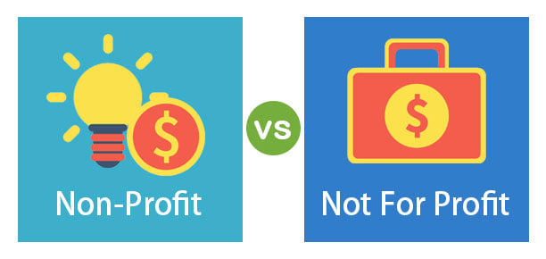

Project Ideas
Project name: Design and Implementation of FAQ based AI-driven Chatbot for COVID-19 Assistance
By Alice W Lin
Summary
The coronavirus Pandemic 2019 outbreak has made it obligatory for all healthcare providers to adapt to changing health circumstances. Disease control centers have encouraged hospitals and healthcare providers to search for innovative ways to switch to online modes for providing proper healthcare. Because of the rapidly spreading Corona Virus, people are bound to their homes. In this manner, chatbots have proven to be a blessing in disguise that can assist in screening processes of the patient in a scalable manner. This project is about creating and implementing a chatbot that would help patients worldwide with questions about the ongoing COVID-19 pandemic. Patients will ask their queries regarding the symptoms of corona and get help from the chatbot using voice input and voice output. The creation of chatbots will be based on “Natural Language Processing (NLP)” and “Artificial Intelligence (AI)”. This chatbot can be deployed at various healthcare facilities. The chatbot would also be beneficial for those who have a speech disability.
Motivation
The coronavirus pandemic can be considered as the accelerator and motivation behind creating and implementing chatbots, having the ability to help people globally to ask their queries while being at home in their safety and comfort zone following the COVID-19 SOPs as well as social distancing. Keeping in view the benefits of these chatbots beyond pandemic in the healthcare sector, the adoption of such a developed form of chatbots will continue to grow in the future. Patients, especially from far-off places, would not have to travel a long distance just for a simple checkup that eventually not only saves their time but their money also. Besides this, there are a lot of other people who are not capable of speaking or even hearing. They find it difficult to explain their health problems to the doctors. This whole thought process motivated me to design an “automatic speech recognition (ASR)” and “Text to speech (TTS)” based chatbot that would help not only other users but also those who have some kind of speech or hearing disability, so that, maximum people can benefit from this technology [1].
Project Description
Chatbot Feature
A chatbot makes an interaction with the human through instant messaging, artificially imitating the human interaction pattern. Artificial intelligence-based algorithms make computers acquire knowledge on their own without programming. Chatbots develop the ability to comprehend the natural language (text or speech). Therefore, a chatbot is some sort of AI-based computer program that pretends to be a human to initiate the conversation with actual humans. Primarily, it allows starting a conversation between machine and human using Text-to-speech or Speech-to-text messages.
One of the important and significant features of the chatbot is that it works independently without human intervention and provides answers to the queries using a combination of already defined scripts and natural language processing [2].
Chatbots can store all the information to be used in the future. They are built on networking algorithms or AI-based machine learning (ML) techniques to get to the right conclusion. Besides memorizing the provided user’s data, chatbots possess the feature to adjust their language as well as the voice tones on the basis of the content of the discussion, personalization, and advanced user experience. A fully designed chatbot having progressive features is capable of providing solutions and suggestions about every type of healthcare issue based on past interactions.
In the case of the COVID -19 pandemic, chatbots provide strong potential for thoughtfully organized information in the healthcare sectors. The curated information is personalized as per the needs and symptoms of each patient. The chatbots can respond to particular questions in a highly interactive manner, more quickly than the conventional online searching methods [3].
The adoption of chatbots for providing information regarding COVID -19 can overcome the burden of reception of hospitals. The coherent feature of a chatbot for checking corona symptoms will reduce the rapidly increasing cases in emergency wards and units.
Open Source Chatbot Tools for COVID-19
To tackle the COVID -19 pandemic, several organizations have generated a list of open-source chatbot software tools that can be used to build recovery plans [4].
- CDC COVID -19 Health Bot: It gathers autonomous screening protocols from organizations.
- Maladie Coronavirus: A chatbot-based open-source questionnaire comprising of 23 questions about symptoms, history, physical attributes, etc.
Skills Required to Build Chatbot
To build a chatbot for the healthcare sector, the software developer must have an in-depth understanding of several programming languages as well as recent technologies. Some of the essential skills that a chatbot developer requires to have are as follows [5]:
- Frameworks for chatbot development: The developer must be proficient in using anyone of the following frameworks to build chatbots from the scratch: “Microsoft Azure Bot Service”, API.ie, “IBM Watson”, etc.
- Technological Skills: Developers must be fully familiarized with the use of Artificial intelligence (AI), “Natural language Processing” and Machine Learning Techniques.
- Programming languages: Chatbot developers are highly recommended to have in-depth knowledge about various programming languages. These programming languages can be Java, PHP, Python, Ruby.
- Mobile messaging App: Chatbot/ software developers must be acquainted with distinct platforms to incorporate chatbots. The example of such platforms is WhatsApp chatbots, Skype, Facebook messenger, etc.
Project Outcome
The project of implementing a FAQ-based AI-driven chatbot will have a positive outcome in various sectors but in the healthcare industry, it will prove to be a blessing in disguise in this time of pandemic when following SOPs and keeping social distancing is very essential for safety, particularly for elderly people. The beneficial outcome of a chatbot is as follows:
- With AI-powered chatbots for the COVID-19 pandemic, patients can attain better solutions for their COVID related symptoms.
- Other than providing help for coronavirus queries, the implementation of chatbots in the health sector can streamline several administrative tasks by overcoming their burden.
- The implementation of a chatbot will make users get a quick response along with a better solution without waiting for a long duration in a queue. The patient would not have to take a week-long doctor appointment for check-ups.

Figure 1. Benefits of Chatbot in Healthcare [6]
Possible funding sources
For Profit Investment Funds

Although not in the health industry, La vie Hotels offers investors guaranteed return on their investments. Due to the recent COVID-19 strike, most investors are now hesitant to put their planned initial investment into the travel and hospitality industry. This spare money that they now have afloat has potential that we can put in good use. There is potential for large profit returns as well as the positive social impact that it might have which may be very appealing to our current investors. But of cos timing is a huge concern, like any business ideas, the right timing to release a product is vital, and if our team is able to successfully come up with exact dates that manufacturing can start within the height of this pandemic, the initial funding can be secured through this route.
Non-profit Investment Funds
Other Investment funds such as the non-profit Global Innovation Funding (GIF) can also be a potential funding source that might be interested in such project. According to the world bank group, the heaviest impact of COVID-19 are among the poorest countries [7]. GIF was set up to confront global development challenges by funding innovations with the potential to improve the lives of the world’s poorest people; and COVID-19 related innovations that might deliver solutions to these developing countries are definitely something GIF might be potentially interested in [8].
Projects such as the “Health Connect” by Praekelt and Idinsight based in South Africa is one of those projects that GIF has supported with a grant of $500K USD. Similar to our AI Chatbot, “Health Connect” is a mobile application that allows users to self-diagnose COVID-19 and seek advice based on their personal circumstances and symptoms [9]. This technology however unlike our very smart AI driven chatbot, is not AI driven, and works more of a command based software that replies the same answer for a particular query. The project received $500K USD grant from GIF proves the feasibility of the Chatbot project.
Project Sustainability and The Future Of Chatbots in Health
idea 1: Chatbot – Health Administrator
The COVID-19 Chatbot project on the surface seems like a rather short business idea. What will happen when the pandemic ends or eventually is under control? The answer would be migrating this technology into other areas of the health industry, potentially patients can have easy access to medication guidance, symptom checks, simple checkups, medical queries, nutrition and so on. Patients can turn to chatbots in an instance, allowing Chatbots to be the first line of support for medical enquiries, and even replacing human doctors and medical staff in some cases, allowing busy organizations to deploy staff elsewhere. Patients will then be directed to Health professionals and Specialists when they fail to handle their issues.
IDEA 2: Chatbot – Home Healthcare Market
According to Precedence research, the global Home Healthcare Market is worth around US$ 167.28 billion in 2020, and expected to grow to US$ 383.66 billion by 2030 [11]. The COVID-19 pandemic has only accelerated the widespread of telehealth, and home healthcare visits. The following are the potential resolutions Chatbots can provide to solve Home Healthcare issues:
- At Home Patient Monitoring: Chatbots can notify local healthcare institutions when patients of Chatbots providers are in situations that are unsafe; and give guidance and monitor effectiveness of certain medications.
- Patience convenience and easy Access: Reduces patient wait times doctors, only when Chatbot is unable to resolve issue for patient, a local doctor will be scheduled.
- Secure Communication: Through identification, two-factor authentication and authorization, end-to-end encryptions, network secure protocols, and self-destructive messages, etc.
- Easy access to Medical History and Patient Information. Through cloud-based technologies.
- Easy billing management: Chatbots gives easy access for patients their payment history and payments due, and make payments and request additional information solving potential billing errors.
IDEA 3: “Hello Mate” Chatbot – Your Mental Health Assistant
According to WHO, the guardian news outlet mentions that from 2005-15, cases of depressive illness increased by nearly a fifth, and within 10 years, the link between suicide, and depression is clear - which is now the second leading cause of death for young people aged 15-29 [10]. As an individual who has suffered with depression myself, I understand the emotional struggles when you have no one to turn to, and Chatbots might just be the solution. Chatbots could just be the scalable solution that can provide integrative means of engaging with individuals, providing a venue to replace traditional counselling, reducing wait-times, and providing immediate relief for patients who can now express their emotions and gain support through therapeutic conversations with Chatbots.
The potential to utilize the Artificial intelligence in Chatbots, the smart algorithms in AI-powered chatbots are now able to conduct emotional conversations through auditory or textual methods, empathizing with human’s behaviors and feelings. The “Hello Mate” 1st generation Chatbot is created after the end of COVID-19. Compared to some of the popular AI voice assistants like Google Assistant, Alexa or Siri, the “Hello Mate” can burst you into laughter with his personalized sarcastic replies, help you get your tasks done; scheduling meetings, setting the alarm, book a cab or ordering your favourite meals. More importantly, he is able to actively engage in real-time conversations with you using the conversational user interface backed by artificial intelligence (AI), machine leaning (ML) and natural language processing (NLP). This combined technology enables “Hello Mate” to continuously learn from their assigned patients (us humans,) be intellectually independent.
“Hello Mate” Would be able to:
Make conversations with patients who are affected by a mental health issue or is just looking for company or assistant.
- Backed by AI’s cognitive ability, Hello Mate is able to attend to and manage the psychological and emotional state of their
- Directly engage and empathies with their users, building a relationship, and fostering better communication with their users.
- Gives users recommendations regarding to their psychological wellbeing and provide users with direct users to the correct treatment that has been validated and supported by research.
- Provide Cognitive Behavioral Therapy (CBD) - AI designed with intense collaboration of psychologists and therapists, providing a range of issues such as depression, anxiety, alcohol and drug use problems, relationship and social issues, eating disorders and other mental illnesses [12].
- Providing support 24/7.
- Ultimately this technology is to not replace psychologists, and mental health professionals, but would act more like an addition to those that are not lucky to have access to these services.
References
[1] J. Espinoza, K. Crown, and O. Kulkarni, “A Guide to Chatbots for COVID-19 Screening at Pediatric Health Care Facilities,” JMIR Public Health Surveill., vol. 6, no. 2, Jun. 2020, DOI: 10.2196/18808.
[2] R. Pryss et al., “Using Chatbots to Support Medical and Psychological Treatment Procedures: Challenges, Opportunities, Technologies, Reference Architecture,” in Digital Phenotyping and Mobile Sensing, H. Baumeister and C. Montag, Eds. Cham: Springer International Publishing, 2019, pp. 249–260.
[3] “Chatbots provide millions with COVID-19 information every day, but they can be improved - here’s how,” World Economic Forum. https://www.weforum.org/agenda/2020/04/chatbots-covid-19-governance-improved-here-s-how/ (accessed Mar. 21, 2021).
[4] “Building and Reusing Open Source Tools for Government,” New America. http://newamerica.org/digital-impact-governance-initiative/reports/building-and-reusing-open-source-tools-government/ (accessed Mar. 21, 2021).
[5] “Chatbot Developers, Top Qualities and Skills,” Full Scale, Jul. 08, 2020. https://fullscale.io/blog/chatbot-developers-top-qualities-and-skills/ (accessed Mar. 21, 2021).
[6] “Advantages of Chatbots in Healthcare Industry [Healthcare Chatbot Benefits],” Appy Pie, Sep. 13, 2020. https://www.appypie.com/healthcare-chatbot-advantages (accessed Mar. 21, 2021).
[7] “Impact of Covid-19 on households: What
do phone surveys tell us?”
https://blogs.worldbank.org/voices/how-covid-19-affects-households-poorest-countries-insights-phone-surveys
(accessed April. 14, 2021).
[8] “Covid-19 Response” Global Innovation Fund.
https://www.globalinnovation.fund/covid-19-response/ (accessed April. 14, 2021).
[9] “Health Connect for Covid” Global Innovation Fund.
https://www.globalinnovation.fund/investments/healthconnect-for-covid/ (accessed April. 14, 2021).
[10] “what-is-depression-and-why-is-it-rising” The Guardian
https://www.theguardian.com/news/2018/jun/04/what-is-depression-and-why-is-it-rising
(accessed April. 16, 2021).
[11] “Home Healthcare Market Size Worth Around US$ 383.66 Bn by 2030” Precedence Research
(accessed April. 16, 2021).
[12] “What Is Cognitive Behavioral Therapy?” American Psychological Association
https://www.apa.org/ptsd-guideline/patients-and-families/cognitive-behavioral
(accessed April. 17, 2021).